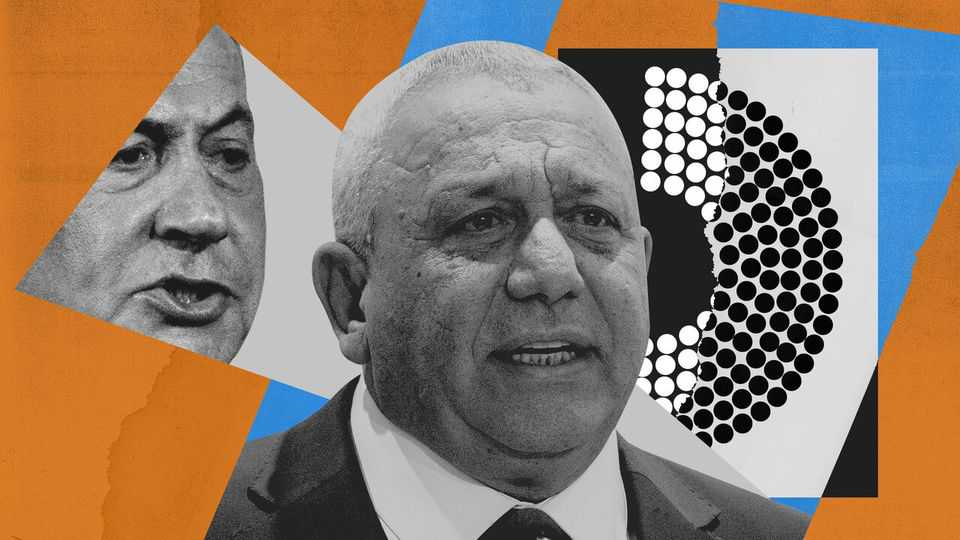

Gadi Eisenkot has a chance to form a new government in Israel
Both his foes and his supposed allies may yet prevent him

Nov 12th 2026
GADI EISENKOT cleared the first hurdle on his path to power on November 8th when Israel’s president, Isaac Herzog, gave him the mandate to form a new government. But he will have to overcome more formidable trials, including the breaking of election promises, if he is to replace Binyamin Netanyahu, the prime minister who lost his coalition’s majority in the election on October 27th.
In a short ceremony at the president’s residence, Mr Eisenkot conceded that “no one can stand for all the commitments they made. We will all have to make compromises.” He hopes to swear in a minority “emergency” government, formed of four Jewish opposition parties. Neither Arab nor Jewish ultra-Orthodox parties would formally be part of his coalition—at least to start with—but they would offer support when needed.
Mr Eisenkot’s rationale is that removing Mr Netanyahu is the most urgent priority. In recent weeks the prime minister has tried to drag Israel into another war with Iran and urged the head of the country’s secret service to investigate the Arab votes and disqualify the election results. To form a coalition with a majority would mean lengthy negotiations and he has only six weeks before the president asks someone else to try forming a government.
Persuading enough parties to secure a majority would mean a lot of promise-breaking. During the election campaign the four Jewish opposition parties committed themselves to universal national service. The ultra-Orthodox parties are demanding, as a condition for joining a coalition, exemption from military service for students of religious seminaries. Three of the four Jewish parties oppose including the Arab parties in a coalition. Mr Eisenkot himself has set a series of conditions, including condemning Hamas, the Islamist militant movement responsible for the massacres of October 7th three years ago, as a terror organisation. Those are difficult for the Arab parties to accept.
But the four main Jewish opposition parties only hold 48 of the 120 seats in the Knesset, Israel’s parliament. A minority government would be a way of avoiding the tricky compromises while leaving open the possibility that Arab or ultra-Orthodox parties could formally join the coalition at a later date.
Mr Eisenkot, a former chief of the Israel Defence Forces, is a relative newcomer to politics. He entered the Knesset in 2022 and has been a party leader for only a year. This was an advantage in the election. His party’s fresh appeal helped it far outperform other parties in the opposition. But Mr Eisenkot has his work cut out to get an unruly camp in line. “We have various permutations for a coalition,” says an adviser to one of the party leaders. “But the four parties have to agree on one first.” His rival opposition leaders are already trying to outmanoeuvre him.
Chief among them is Avigdor Lieberman, of the nationalist Yisrael Beiteinu party. Mr Lieberman began his political career nearly four decades ago as an assistant to Mr Netanyahu but he has now sworn to end his rule. Yisrael Beiteinu won only seven seats in the election, but Mr Lieberman still fancies himself as both a coalition builder and future prime minister. He has begun his own freelance operation, negotiating with the ultra-Orthodox parties. He has ruled out being part of a minority government, especially if that would mean relying on support from Arab parties.
Meanwhile, Mr Netanyahu has not bowed out. Lawyers for his Likud party are trying to challenge the election result, claiming foreign interference and irregularities among the Arab voters. The Shin Bet security agency, headed by one of Mr Netanyahu’s loyalists, is investigating these claims but the resolutely independent attorney-general has ruled that there is insufficient evidence to question the vote-count or haul Arab politicians in for questioning. The election results have been ratified.
The prime minister’s fallback is to try to stymie the opposition’s coalition-building. On November 7th Mr Netanyahu called for a unity government, which presumably he would lead, instead of “a government relying on Islamists that will dismantle Israel from within”. He warned that “with a government such as this Israel simply will not survive.” Mr Eisenkot’s response was to describe the prime minister as “hysterical”. He will need his wits about him if he is yet to fulfill his election promise and replace Mr Netanyahu. ■